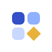
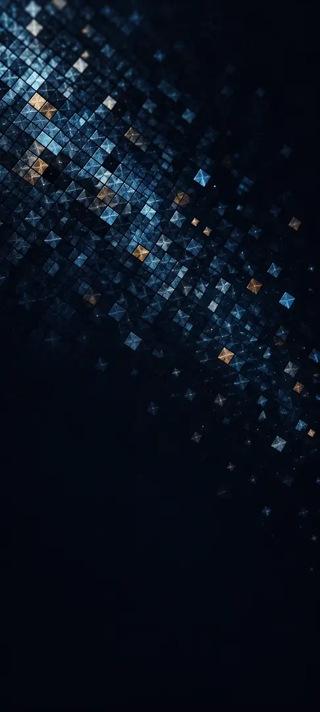
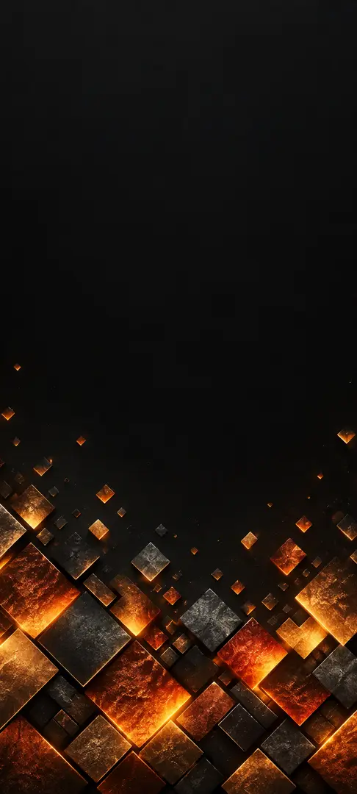
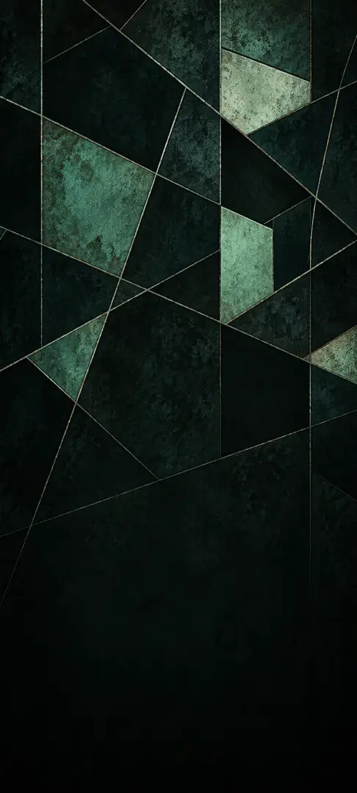

TesseraOS
Вільний дистрибутив Android на базі LineageOS 22.2 (Android 15) із власним UI-шаром за Material Design 3. Без пропрієтарних бінарників, з відкритим кодом і зрозумілою межею того, що взагалі можна легально зробити.
Що це
Дистрибутив, а не нова система з нуля
Android — це AOSP: мільйони рядків кода й роки роботи інженерів. Жоден проєкт не пише заново ядро та системні сервіси. Він бере вільну базу і додає свій шар — тему, додатки, політики, оновлення. TesseraOS робить саме це, і каже про це прямо.
01
Інтерфейс
Стоковий AOSP + Material You: палітра народжується з кольору шпалер, як у Pixel. Це не копія чужого бренду, а відкритий стандарт Material Design 3.
02
Легальність
Apache-2.0, жодних чужих бінарників у репозиторії. Плей-маркет не вшитий: його видають виробнику після сертифікації. Є microG у образі та профіль для встановлення GApps самому.
03
Перша ціль
x86_64 віртуальна машина та емулятор — щоб перевірити збірку ще на компʼютері, перш ніж просити когось прошивати телефон.
Як виглядає
Живий макет інтерфейсу
Це інтерактивний макет у браузері, а не скриншот прошивки: він показує, що дає Material You і що саме підміняють наші оверлеї. Оберіть колір-основу — палітра перерахується, як це робить Monet на пристрої.
Шпалера — це джерело кольору: Monet рахує всю палітру від неї. Оберіть іншу — і колір-основа нижче зміниться сам.
Це справжній важіль нашого оверлею:
config_useRoundIcon і config_icon_mask у framework.
Типово 5 × 6 — так, як у профілі
5_by_6 з device_profiles.xml бази. Рядки задає той самий файл,
тому тут змінюється лише кількість стовпців.
Макет не стверджує, що образ уже зібраний: він показує цільову поведінку палітри й
геометрії. Сітка 5 × 6 з доком із 5 іконок — це вже файл у репо; рядок
«дата + погода» й шухляда тепер у власному лаунчері в apps/launcher.
Екрани «Калькулятор» і «Файли» знімають з apps/calculator та
apps/files: тон клавіш, позначки типів і порядок сортування взяті з коду.
Усі три застосунки збирає CI, але на екрані пристрою їх ще не бачили.
Що саме змінюють наші оверлеї
| Ефект | Ресурс | Стан |
|---|---|---|
| Круглі adaptive-іконки | config_useRoundIcon, config_icon_mask (framework) |
✓ працює |
| Material You як джерело кольору | Monet у базі; наш fallback-оверлей активний лише за dynamic_color=0 |
✓ працює |
| Акцент у Налаштуваннях | icon_accent (packages/apps/Settings) |
✓ працює |
| Панель швидких у 2 колонки, радіус 28 dp | quick_settings_num_columns, qs_corner_radius |
△ вже таке в базі |
| Сітка лаунчера 5 × 6, док із 5 іконок | build-time підміна device_profiles.xml (не RRO) |
✓ у репо · перевірити на образі |
Тональні поверхні, surfaceContainer, форми |
не існує у framework — це рівень Compose + Material 3 | ✕ не можна оверлеєм |
Цю таблицю не написано «на око»: кожне імя перевірено сирцевими файлами бази LineageOS 22.2
скриптом build/scripts/check-overlay-names.sh. Він же стоїть у CI, бо збірка
RRO-пакета проходить успішно навіть тоді, коли імен ресурсів у цілі не існує.
Айдентика
Власний знак, власний шрифт, власні кольори
Дистрибутив без власного обличчя — це ще один «якийсь Android», який ніхто не
запамʼятає. Тому в TesseraOS є своя айдентика: мозаїчний знак, дві звʼязки шрифтів
з повною кирилицею, пʼять маркових кольорів і три шпалери. Усе це — окремі файли
в репозиторії (brand/), а не картинка, вилита з сайту, і кожен із них
перевіряє скрипт build/scripts/check-brand.sh.
Знак
«Tessera» — мозаїчна плитка. Чотири плитки: три лежать у сітці, четверта повернута на 45° — та, що задає візерунок усій системі.

Той самий знак у трьох розмірах — 24, 16 і 12 px, бо він має читатися й у панелі стану:
Для системи той самий малюнок існує як
VectorDrawable — brand/android/tessera_mark.xml. Геометрія двох файлів
звіряється автоматично, щоб знак у UI ніколи не розійшовся зі знаком на сайті.
Шрифт
Два шрифти з відкритою ліцензією SIL Open Font License 1.1, обидва з кирилицею. Заголовки — Unbounded (тут і далі підписаний як «Tessera Display»), інтерфейс і текст — Manrope.
Тессера
Мозаїка, яку видно здалеку — і поодинокі плитки, які видно зблизька.
Чотири літери, яких найчастіше бракує в європейських наборах: Ґ, Є, Ї, І та
їхні строчні форми. brand-font-check.js читає таблицю cmap
просто з TTF і каже «НЕМАЄ», якщо хоча б однієї не вистачає. Тож кирилиця тут не
на віру, а перевірена.
Сайт підключує локальні woff2-підмножини
(latin + cyrillic), жодного запиту до Google Fonts. Android у fonts.xml
woff2 не читає, тому для образу ROM потрібні повні TTF; їх завантажує
build/scripts/fetch-brand-fonts.sh — за контрольними сумами, а не «якось так».
Кольори
Два набори не плутайте. Нижче — маркові кольори: вони ніколи не змінюються і живуть у знаку, на сайті та у документації. Палітра самого інтерфейсу народжується з шпалери за правилом Material You — саме нею можна покрутити в розділі «Спробувати».
Шпалери
Три власні зображення 1080 × 2400, зроблені для проєкту. Кожна одночасно є колір-основою: на пристрої Monet візьме сид саме з неї, тому вибір шпалери змінює весь інтерфейс.



Оригінали лежать у brand/wallpapers/
(JPG 1080 × 2400), а сюди потрапили зменшені webp 486 × 1080 — щоб сторінка лишалася
легкою. Контрольні суми і оригіналів, і сайт-копій перевіряє
check-brand.sh.
Спробувати
Три шляхи, від найшвидшого до справжнього
ШЛЯХ 1 · 10 СЕК
Макет вище
Посуньте колір-основу, перемикайте тему й сітку. Це найдоступніший спосіб побачити задуману поведінку — без збірки й без прошивання.
ШЛЯХ 2 · ГОДИНА
Оверлеї на емулятор
Зберіть три RRO-пакети локально (потрібен лише Android SDK, повна збірка не потрібна) і поставте на будь-який Android 15-емулятор.
build/scripts/build-themes.sh
adb install -r overlay/out/TesseraIconShapeTheme.apk
adb shell cmd overlay enable os.tessera.theme.iconshapeШЛЯХ 3 · ВЕЧІР
Повний образ
Для цього потрібен Linux, ~32 ГБ оперативної памʼяті та 400 ГБ місця. Збірка AOSP на Windows чи macOS неможлива — це обмеження самої системи збірки.
# 1. Середовище (Debian 12 / Ubuntu 22.04+)
build/scripts/bootstrap.sh
# 2. Джерела бази + наш шар
repo init -u https://github.com/LineageOS/manifest -b lineage-22.2
repo sync -c -j"$(nproc)"
mkdir -p vendor/tessera
git clone https://github.com/nothing12-glitch/Tessera-OS vendor/tessera/os
# 3. Розв'язати linkfile з маніфесту, потім — ланч і збірка
source build/envsetup.sh
lunch tessera_x86_64-userdebug
m -j"$(nproc)"
# 4. Запуск у віртуальній машині
build/scripts/run-avd.sh
Деталі й типові помилки: docs/BUILD.md та docs/EMULATOR.md у репозиторії.
Статус
Де проєкт зараз
Зроблено
Структура дистрибутива, конфіг продукту та BoardConfig, маніфест із linkfile,
три RRO-оверлеї з перевіреними іменами, захист імен у CI, документація зі збірки,
емулятора, GApps і тем, ліцензія Apache-2.0. Три власні застосунки —
apps/launcher, apps/calculator, apps/files —
з тестами, реєстром build/scripts/apps.list та матрицею CI.
Власна айдентика: знак (SVG і VectorDrawable з однаковою геометрією), дві
OFL-ліцензії шрифтів із перевіреною кирилицею, пʼять маркових кольорів і три
шпалери — усе з контрольними сумами у check-brand.sh.
Наступне
Перший зібраний образ, який запускається в емуляторі; звірка імен settingslib_*
зі зібраного Settings.apk; перевірка сітки 5 × 6 на тому образі; наступні
застосунки — годинник, галерея, нотатки.
Не перевірено на пристрої. Поки образ не зібрано, пункти про ефект оверлеїв — гіпотеза з доказом на рівні імен ресурсів, а не факт.
Як перевірити самому
Усе, що заявляє ця сторінка, відтворюється однією командою на звичайному компʼютері — збірка образу для цього не потрібна.
# чи існують імена ресурсів у базі
bash build/scripts/check-overlay-names.sh
# чи збираються й підписуються оверлеї
bash build/scripts/build-themes.sh
# чи наші застосунки справді входять в образ
bash build/scripts/check-app-integration.sh
# що всередині пакета
aapt2 dump resources overlay/out/TesseraIconShapeTheme.apkCI-воркфлоу build-apps,
build-themes і policy
женуть ці самі перевірки на кожен пуш.
Межі
Чого тут навмисне немає
Пропрієтарних бінарників
У репозиторії заборонені .so, .apk,
.jar, .img й архіви — це перевіряє окремий воркфлоу. Жодних
витягнутих з телефону шматків системи.
Чужого бренду
Вільний відповідник шрифту Product Sans, логотип «G», назва «Pixel», шпалери та звуки Google, анімація завантаження — усе це захищені марки. Ми запозичуємо геометрію й поведінку Material Design 3, а не чужу айдентику.
Підставних скриншотів
Тут немає знімків «готової системи», бо готової системи ще немає. Макет вище підписаний як макет — інакше це була б реклама, а не інженерія.